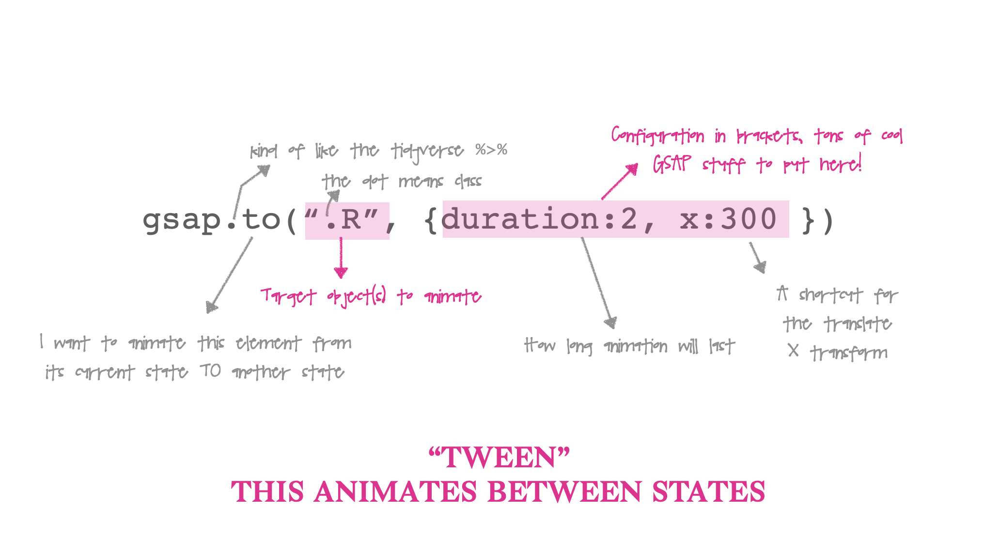

<script src="https://cdnjs.cloudflare.com/ajax/libs/gsap/3.5.1/gsap.min.js"></script>Greensock is a JavaScript library that lets you animate DOM elements. I’ve honestly learned everything I know about GSAP from their 20 minute tutorial video and trial and error. Here I’ll go over the three steps needed to animate an element of your Xaringan slides:
- Import the Greensock CDN into the head of your slide html
- Create the elements you want to animate in markdown
- Create a JavaScript file with the GSAP code to make those elements move.
tl;dr here’s the slide repo where I animate two rotating images inside a Xaringan presentation.
Import the Greensock CDN
I took the default YAML included in the Xaringan examples, then totally stole some code from the incredible Garrick Aden-Buie’s presentation. He adds the argument includes: in_header: head.html in the YAML where head.html includes what you want to load in the head of your slides. Your front matter should look a little something like this:
title: "A GSAP Tutorial"
subtitle: "Learn how to use GSAP animations in your slides!"
author: "Maya Gans"
output:
xaringan::moon_reader:
css: "style.css"
lib_dir: libs
nature:
highlightStyle: github
highlightLines: true
countIncrementalSlides: false
includes:
in_header: head.htmlAnd we’ll put the CDN for GSAP inside the head.html file:
Alright! Now we can use GSAP in our slides!
Create elements to animate
So we can use GSAP functions now but first we need to create elements to use those functions on. I’m going to add two images, similar to the GSAP video. I wrapped the two images below in a container and child div in order to center the images on the page.
<div class="container">
<div class="child">
<img src = "Rlogo.png" class="r"/>
<img src = "gsap.png" class="gsap"/>
</div>
</div>GSAP Code
Before we get to our goal of spinning these images in a circle, I want to break down what a GSAP “TWEEN”. Let’s simply start by using the to method to move our R logo from it’s start position 300 pixels to the right:


But Maya, I copied your code above and my animation occurs once - yours occurs on loop, it goes back and forth, and it even BOUNCES!
I got fancy and added more to my configuration. I set repeat: -1 which means loop through my animation infinitely, and yoyo: true which means play my animation, then play it in reverse – try it!
There’s also an ease property if we want. We can use ease: "bounce" in our configuration to make the image look like its bouncing. GSAP includes a GUI explorer to look at different eases, and even create your own!
Animate around center
Step 1: Use the set method to set the transform of each element to its center
gsap.set(".R, .gsap", {transformOrigin: "50% 50%"});There’s no duration here because it’s set immediately when called. GSAP uses the JavaScript function querySelectorAll for the target, so we can specify both elements in the same tween by comma seperating them!
Step 2: Rotate
gsap.to(".R, .gsap", {duration 2, rotation: 360})Step 3: Rotate inifinitely
Let’s rotate the object by 360 degrees, and give the animation a duration of 2. Let’s also set the repeat to infinity:
gsap.to(".R, .gsap", {duration: 2, rotation: 360, repeat: -1})
Putting that together we can place our JS code under the R and GSAP images because they have to exist on the page prior to running our GSAP code:
<script>
gsap.set(".R, .gsap", {transformOrigin: "50% 50%"});
gsap.to(".R, .gsap", {duration: 2, rotation: 360, repeat: -1})
</script>And that’s all there is to it for including GSAP in R. To recap you need (1) GSAP in the head of the document, (2) the elements to animate, and (3) the GSAP JavaScript code to animate them. This is only the tiniest tip of the GSAP iceberg; you can create really cool timelines of animations which trigger one after the other. Hopefully this is enough to get you started. Have fun!